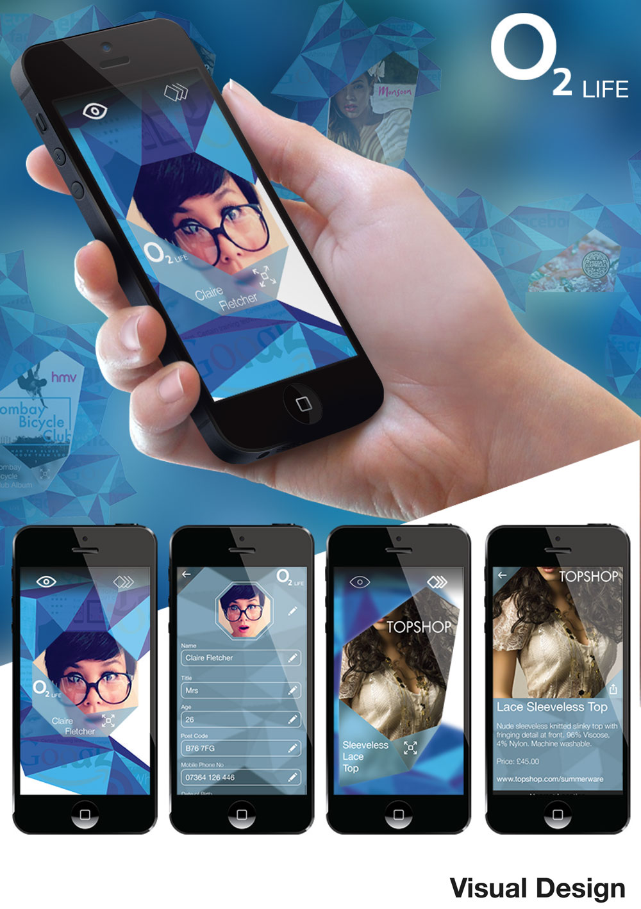
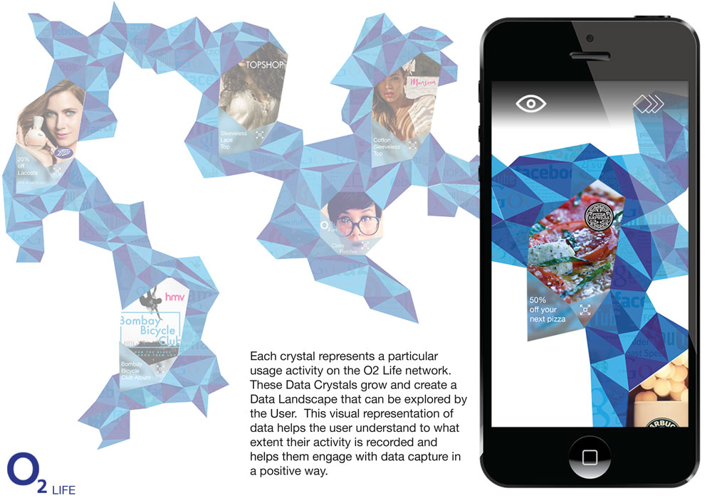
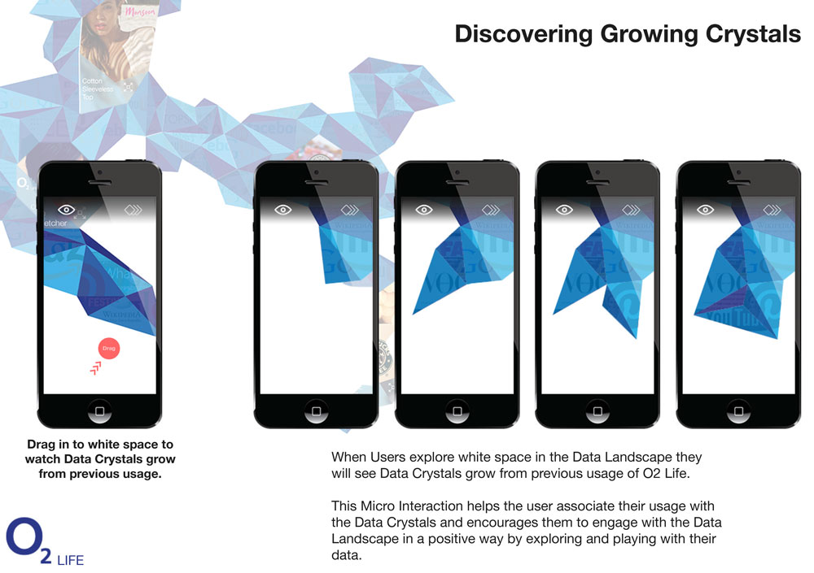
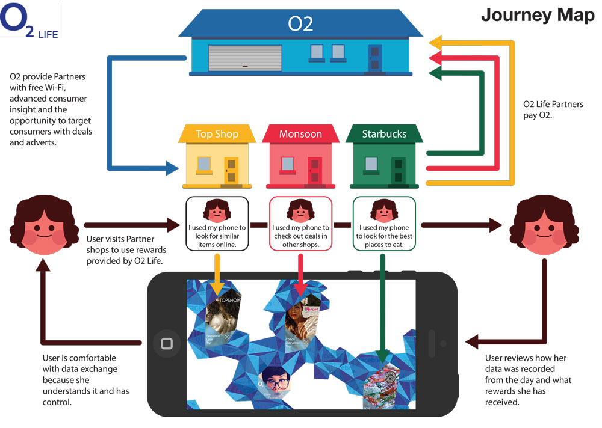
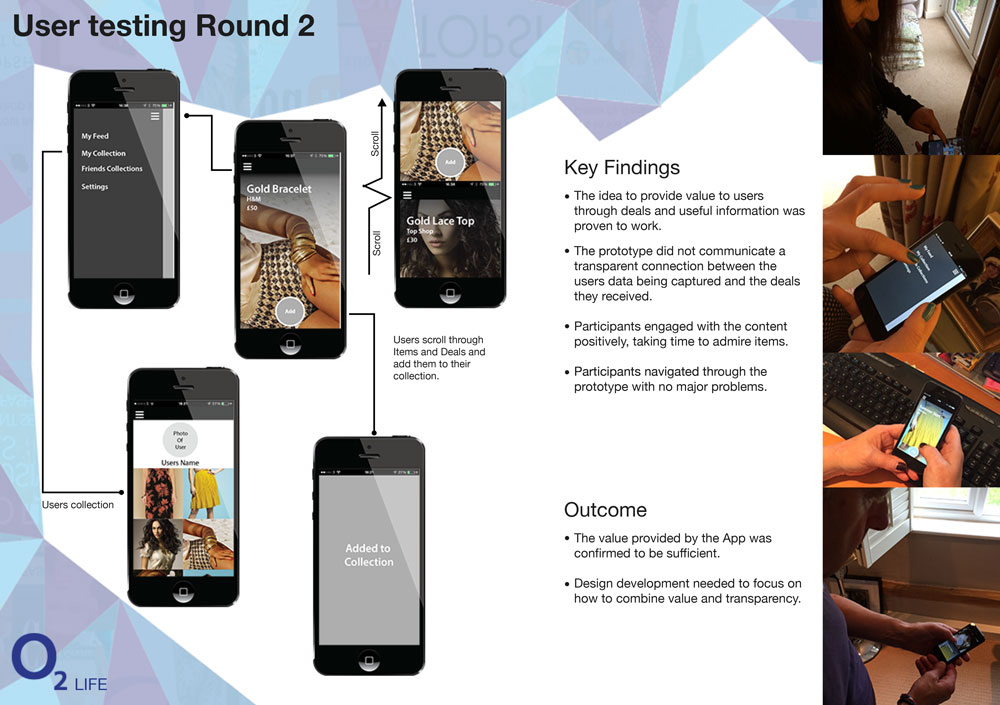
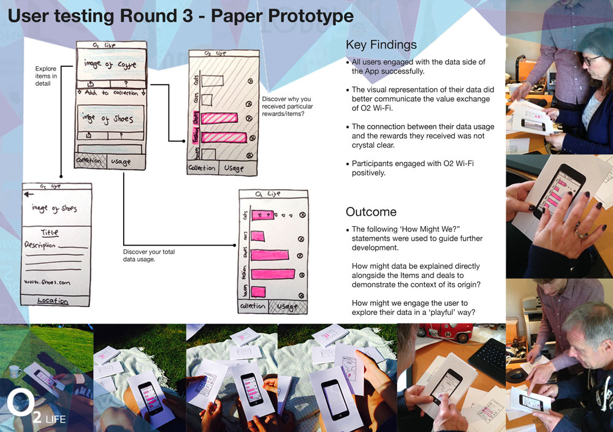
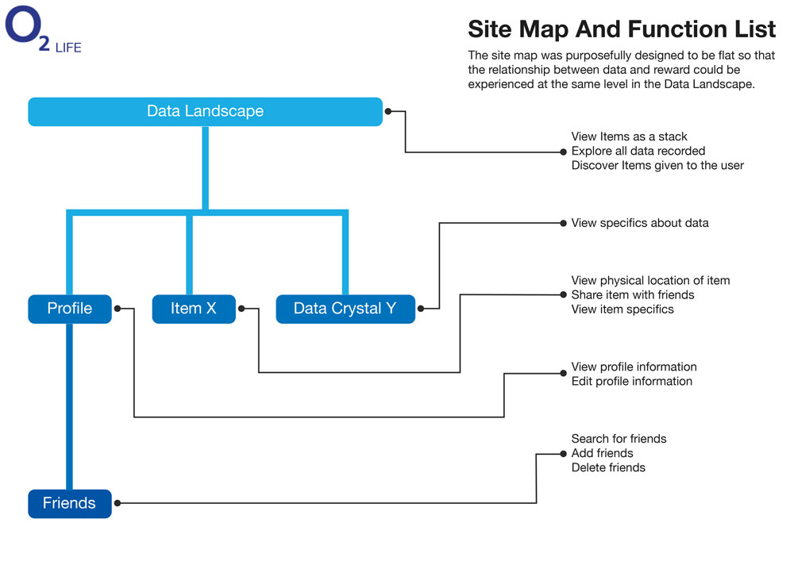

Big Data is a key catalyst to modern digital innovation. However, our biggest challenge is not technical execution, its human perception and adoption. O2 chose me to tackle this problem for my major Master project.
I reported directly to the head of O2 Client Experience and identified the O2’s problem with data monetization through a substantial body of generative research. This entailed, utalising innovative research techniques with members of the public to identify their mental model of data monetization, their feelings towards it and their direct/indirect experiences with it. This research was analysed thematically to uncover insights that lead an iterative design process with multiple iterations and tests with users. The final design uses skeuomorphic micro interactions and visual representations to communicate what user data is captured and how the user benefits as well as giving the user control of their data.














